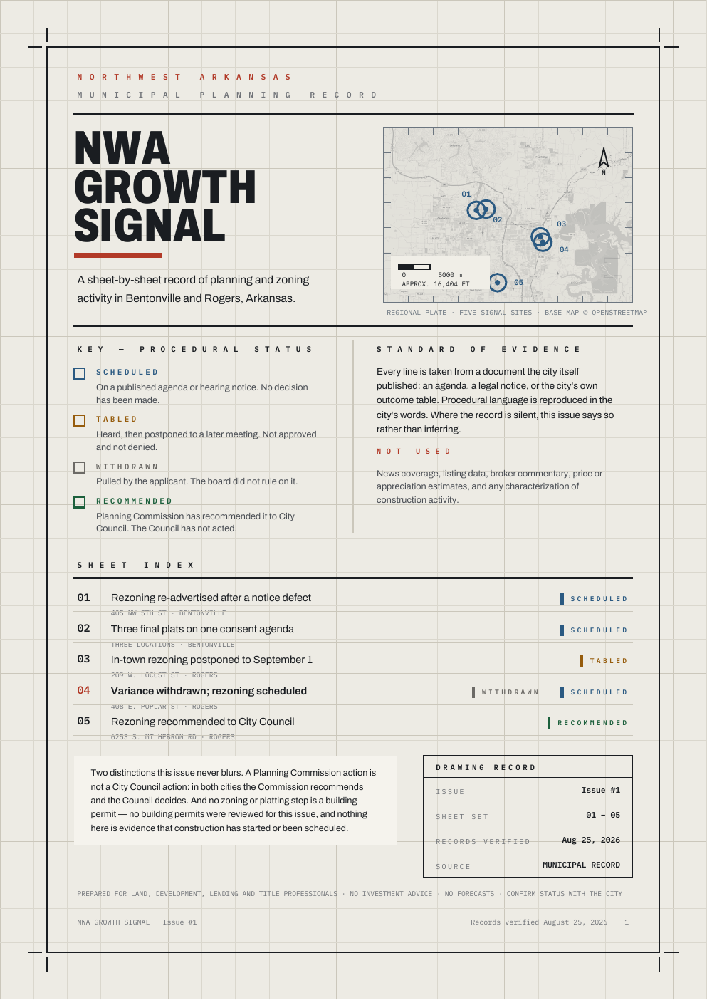

Loading the verified record…
Northwest Arkansas · Agent-native municipal record
The city record.Ready for people and agents.
Search Bentonville and Rogers planning activity, inspect the evidence, and stage a brief without turning a recommendation into an approval.

Issue 01 · Three-page evidence sampleRead the public record , opens in a new tabChecking WebMCPHuman browsing works in every modern browser.
Live WebMCP receipt
Real calls. Visible outcomes.
Session-local evidence from the four registered tool handlers. The review decision remains with the person using this page.
Release freshness
Checking snapshot
Procedural statuses remain as recorded.
No agent calls have run in this session.
Only the latest eight agent calls are shown.
Verified working surface
Signal desk
Five records · two municipalities · verified September 2, 2026
Record index
LoadingStandard of evidence
The procedural stage is the story.
Every line starts with a city-published agenda, notice, outcome table, or case record. The tools retrieve the same bounded facts visible to the person using the page.
- Scheduled
- On a published agenda or notice. No decision has been made.
- Tabled
- Postponed. Not approved, denied, or withdrawn.
- Withdrawn
- Pulled by the applicant. The body did not deny it.
- Recommended
- Advanced by a commission; separate council action remains.
Workflow field ledger
Four products. Four working contexts.
Each product is described by the job published on its own site.
Sources verified August 28, 2026
-
Agenda lifecycle
CivicPlus official product page, opens in a new tab
Manages the agenda and meeting lifecycle, from agenda creation through public content.
-
Parcel research
Regrid Property App official product page, opens in a new tab
Supports parcel lookup, boundaries, filters, layers, and property research.
-
Permit operations
PermitFlow official product page, opens in a new tab
Automates construction permit workflows, including filing and tracking.
-
Planning snapshot
NWA Growth Signal
NWA Growth Signal translates a dated Bentonville/Rogers municipal-planning snapshot into filing-level status, official-source context, agent staging, and human review.
Deliberately not inferred
Construction status · price movement · appreciation · demographic targeting · a relationship between separate filings · approval where only recommendation is recorded